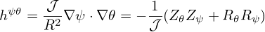

Metric elements of the (ψ,𝜃,ϕ) coordinates, e.g., ∇ψ ⋅∇𝜃, are often needed in practical calculations. Next, we express these metric elements in terms of the cylindrical coordinates (R,Z) and their partial derivatives with respect to ψ and 𝜃. Note that, in this case, the coordinate system is (ψ,𝜃,ϕ) while R and Z are functions of ψ and 𝜃, i.e.,
|
| (200) |
|
| (201) |
Then ∇R and ∇Z are written as
|
| (202) |
|
| (203) |
wehre Rψ ≡ ∂R∕∂ψ, etc. Equations (202) and (203) can be solved to give
|
| (204) |
|
| (205) |
Using the above expressions, the Jacobian of (ψ,𝜃,ϕ) coordinates, 𝒥 , is written as
|
| (207) |
Using this, Expressions (204) and (205) are written as
|
| (208) |
and
|
| (209) |
Then the elements of the metric matrix are written as
|
| (210) |
|
| (211) |
and
|
| (212) |
Equations (210), (211), and (212) are the expressions of the metric elements in terms of R, Rψ, R𝜃, Zψ, and Z𝜃. [Combining the above results, we obtain
|
| (213) |
Equation (212) is used in GTAW code. Using the above results, hαβ = ∇α ⋅∇β are written as
|
| (214) |
|
| (215) |
|
| (216) |
As a side product of the above results, we can calculate the arc length in the poloidal plane along a constant ψ surface, dℓp, which is expressed as